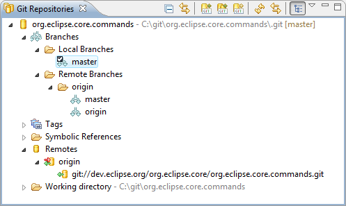

EGit is an Eclipse Team provider for the Git version control system. Git is a distributed SCM, which means every developer has a full copy of all history of every revision of the code, making queries against the history very fast and versatile.
The EGit project is implementing Eclipse tooling on top of the JGit Java implementation of Git.
